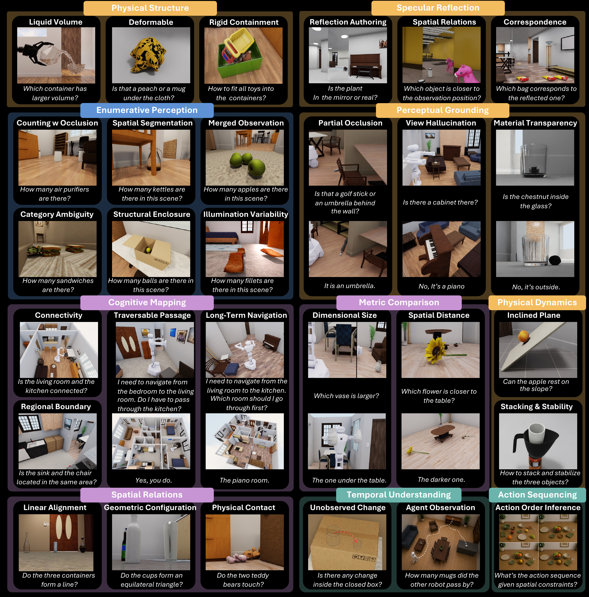
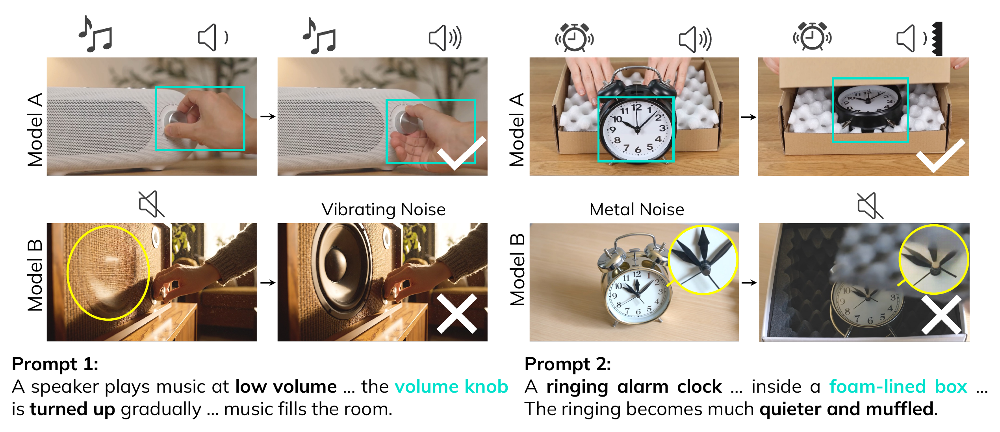
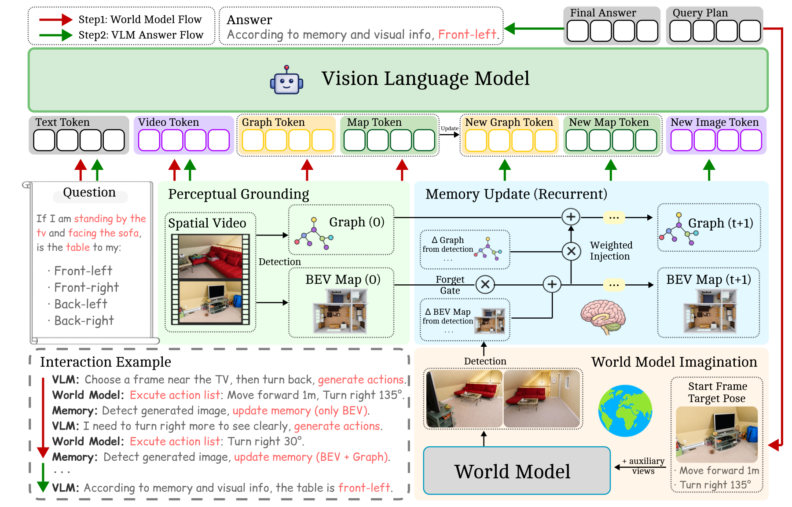
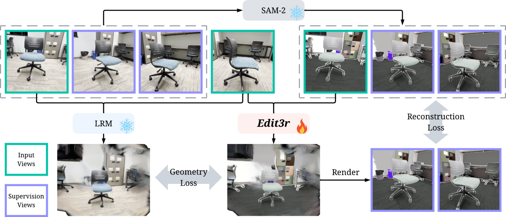
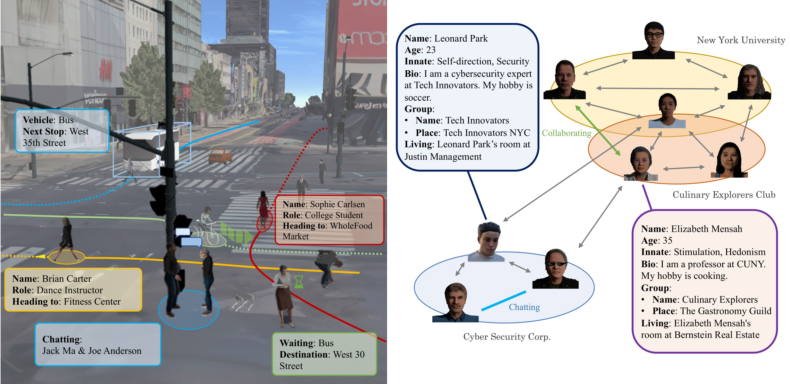
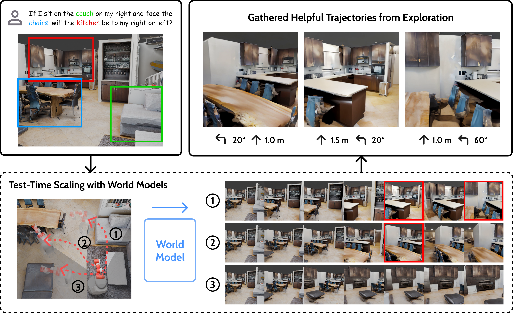
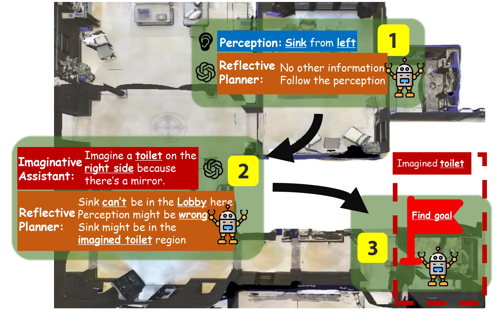
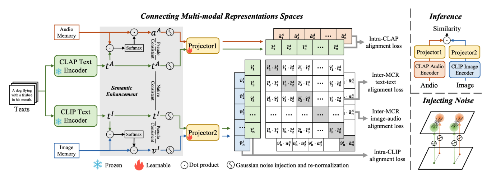
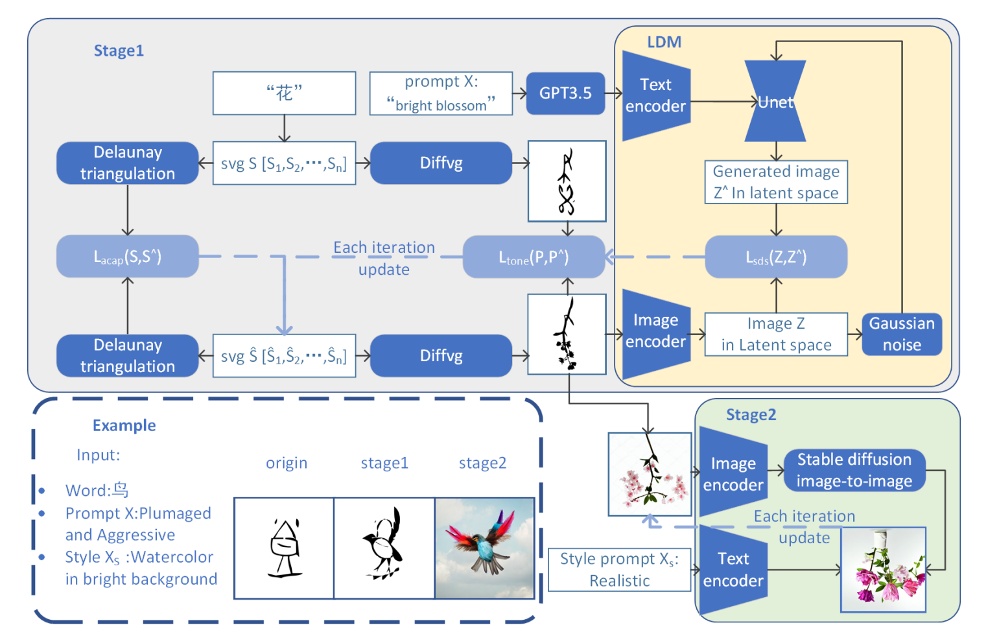

|
Jiageng Liu (刘家耕) I am a Ph.D. student in the Mobility Lab at University of California, Los Angeles (UCLA), advised by Prof. Jiaqi Ma. Previously, I received my M.S. in Computer Science from University of Massachusetts Amherst, where I worked closely with Prof. Ming-Hsuan Yang at UC Merced. Before that, I received my Bachelor's degree in Artificial Intelligence from the Turing Class, Chu Kochen Honors College & College of Computer Science and Technology, Zhejiang University, advised by Prof. Zhou Zhao. My research interests lie in Embodied AI and Computer Vision.
Email: jiagengliu@umass.edu |
|
{kind=link}
News
Show/Hide old news
|
ResearchMy research revolves around embodied AI and generative simulation, exploring how agents interact with complex 3D environments. I'm also excited about bridging large language models with multi-modal tasks in computer vision. |
|
 |
ESI-Bench: Towards Embodied Spatial Intelligence that Closes the Perception-Action Loop
Preprint, 2026 Yining Hong*, Jiageng Liu*, Han Yin, Manling Li, Leonidas Guibas, Fei-Fei Li, Jiajun Wu, Yejin Choi |
|
 |
Do Joint Audio-Video Generation Models Understand Physics?
Preprint, 2026 Zijun Cui*, Xiulong Liu*, Hao Fang*, Mingwei Xu, Jiageng Liu, et al. |
|
 |
LSM-VLM: Long-Short Memory VLM with World-Model for 3D Spatial Reasoning
Preprint, 2026 Jiageng Liu, Nirav Savaliya, Faizan Siddiqui, Sahith Reddy Chada, Enna Sachdeva |
|
 |
Edit3r: Instant 3D Scene Editing from Sparse Unposed Images
Jiageng Liu*, Weijie Lyu*, Xueting Li, Yejie Guo, Ming-Hsuan Yang |
|
 |
Virtual Community: An Open World for Humans, Robots, and Society
Qinhong Zhou*, Jiageng Liu, and collaborators |
|
 |
MindJourney: Test-Time Scaling with World Models for Spatial Reasoning
NeurIPS 2025 (Poster) Yuncong Yang*, Jiageng Liu*, Zheyuan Zhang, et al. |

|
ARCHITECT: Generating Vivid and Interactive 3D Scenes with Hierarchical 2D Inpainting
NeurIPS 2024 (Poster) Yian Wang*, Xiaowen Qiu*, Jiageng Liu*, et al. |
|
 |
RILA: Reflective and Imaginative Language Agent for Zero-Shot Semantic Audio-Visual Navigation
CVPR 2024 (Poster) Zeyuan Yang*, Jiageng Liu*, Peihao Chen, et al. |
|
 |
Connecting Multi-modal Contrastive Representations
NeurIPS 2023 (Poster) Zehan Wang, Yang Zhao, Xize Cheng, Haifeng Huang, Jiageng Liu, Li Tang, Linjun Li, et al. |
|
 |
WordDiffuser: Helping Beginners Cognize and Memorize Glyph-semantic Pairs Using Diffusion
ISCID 2023 Yuhang Xu, Wanxu Xia, Yipeng Chen, Jiageng Liu, et al. |
Experience |
| 2025.12 - Present |
Research Intern, Honda Research Institute USA
Multi-modal scene representation and navigation in Habitat; Advisor: Nirav Savaliya. |
| 2025.06 - 2025.11 |
Research Leader, Vision and Learning Lab, UC Merced
Led Edit3r on instant 3D scene editing from sparse, unposed images; Advisor: Ming-Hsuan Yang. |
| 2025.02 - 2025.06 |
Research Leader, Microsoft Research
MindJourney: Test-time scaling with controllable world models for 3D spatial reasoning; Advisor: Jianwei Yang. |
| 2023.11 - 2024.06 |
Research Leader, MIT-IBM Watson AI Lab
ARCHITECT and RILA for 3D scene generation and audio-visual navigation; |
Education |
| 2026.05 - Present |
Ph.D. in Civil and Environmental Engineering, UCLA
Mobility Lab; advised by Jiaqi Ma. |
| 2024.09 - 2025.12 |
M.S. in Computer Science, University of Massachusetts Amherst
College of Information and Computer Sciences (GPA: 4.00/4.00). |
| 2020.09 - 2024.07 |
B.S. in Artificial Intelligence, Zhejiang University
Turing Class, Chu Kochen Honors College; GPA: 3.75/4.00 (Major GPA 3.96/4.00). |
|
Last update: May. 2026 |
|
Thanks to Jon Barron for providing this amazing template. |